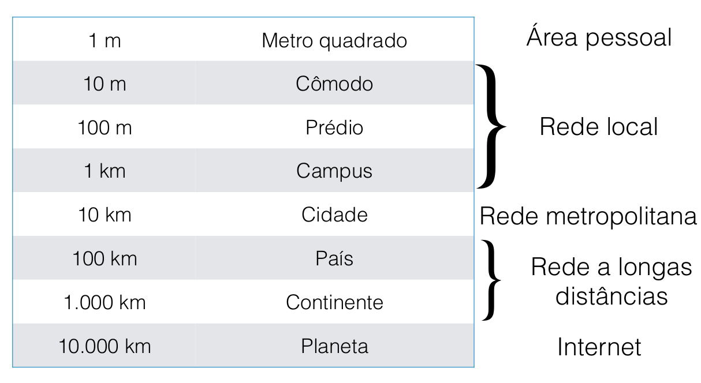
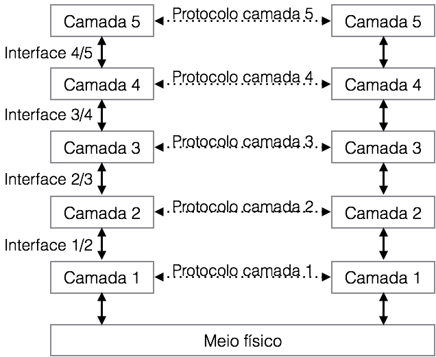
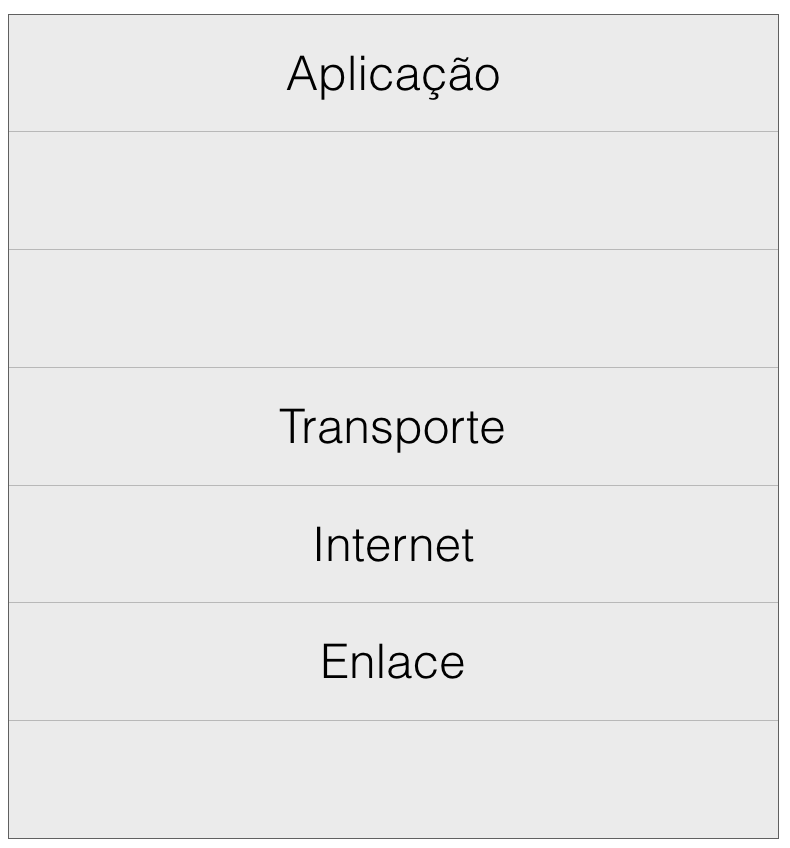

Conceitos básicos
“We live in a very complex world.” – Vint Cerf.
Neste capítulo, introduziremos alguns conceitos e nomenclaturas utilizados em redes de computadores. Também discutiremos brevemente o modelo OSI e TCP/IP, que são os modelos mais conhecidos e discutiremos a abordagem adotada nesta apostila, que mescla um pouco dos dois modelos.
Já vimos que uma rede de computadores é formada por dois ou mais dispositivos interconectados através de uma tecnologia e conseguem trocar/compartilhar informações e/ou recursos. Isto é importante, pois é a definição de uma rede de computadores! Através da união de muitas e muitas redes, nós construímos o que chamamos de Internet - a rede mundial de computadores. Em redes de computadores, chamamos os dispositivos interconectados de nós (em inglês, nodes).
Aqui vale apresentar a distinção entre internet e Internet. Internet é a entidade que representa essa interconexão mundial de diversas redes de computadores, já internet é simplesmente a interconexão de computadores. Basicamente a escala da rede é o grande diferencial. Quando estamos nos referindo a esta entidade, onde simplesmente podemos digitar alguma coisa em um navegador e ele retornar o resultado que possivelmente esta em outro continente, e para chegar até a minha máquina, passou por diversas redes em diferentes países, esta é a Internet. Agora, eu abri um arquivo do meu computador e mandei imprimir na minha impressora wireless, esta é a internet.
Com advento das redes de computadores foi possível introduzir diversas aplicações: compartilhamento de recursos (peer-to-peer), e-mail, mensagens instantâneas (mIRC, icq, messenger,...), Voice over IP (VOIP), e-commerce, redes sociais (myspace, orkut, facebook, instagram, ...), IPTV e muitas outras. O uso de redes de computadores tem hoje aplicações comerciais e domésticas; que muitas vezes se intersectam. Do lado das aplicações comerciais, existem negócios contruídos tendo a Internet como base. Isto implica o negócio em diversas formas, positiva e negativamente. Do lado positivo temos a facilidade, o alcance que o seu negócio pode ter, sem barreiras físicas. O lado negativo é que se as interconexões falham, as perdas também podem ser grandes.
Atualmente existe uma categorização para o tamanho das redes baseado na distância entre os nós:

Rede de Área Pessoal (Personal Area Network - PAN) : são redes pessoais, ou seja, é a conexão entre dispostivos que estão em uma distância muito pequena, um ou dois metros. Se for uma rede PAN sem fio, temos uma WPAN (Wireless PAN). Encontramos nesta categoria os dispositivos com a tecnologia bluetooth, infravermelho, e outros. É por exemplo, o mouse sem fio conectado no computador, ou quando conectamos nosso celular ao celular de outra pessoa usando bluetooth para compartilhar um arquivo ou mesmo acesso ao 3/4G.
Rede de Área Local (Local Area Network - LAN) : esta entre 10m e 1km, ou seja, ela pode estar dentro de um cômodo ou uma casa, um escritório, uma empresa ou um campus universitário. Esta é mais fácil de entendermos, pois utilizamos no nosso dia-a-dia. Na sua casa, possivelmente você tem um roteador wi-fi criando uma pequena LAN. No seu estágio ou trabalho, quando você chega, também deve ter uma LAN interconectando as máquinas. E na própria universidade, que tem uma extensão maior, também é considerada uma LAN. Também temos uma nomenclatura especial, quando ela utiliza a tecnologia wireless, WLAN (Wireless LAN). Encontramos habitualmente os cabos par trançados e a tecnologia wi-fi.
Rede Metropolitana (Metropolitan Area Network - MAN) : a cobertura de uma rede de área metropolitana, como o nome diz, é uma cidade. Em uma MAN, temos a interconexão de diversas LANs através de uma "espinha dorsal" ou backbone. Geralmente, a velocidade dos backbones é muito alta.
Rede Geográficamente Distribuídas(Wide Area Network - WAN) : a rede de maior área que interliga LANs e MANs, ultrapassando limites geográficos, abrangendo um país ou continente.
Ainda, recentemente, devido ao avanço tecnológico, alguns novos grupos são encontrados na literatura também. Devido aos dispositivos e-healthy, smartphones wearables gadgets e smartwatches, temos as Body Area Network ou Body Sensor Network. Quando utiliza tecnologia wireless, temos as WBAN (Wireless BAN). Trata-se de uma rede pessoal reduzida aos dispositivos que se encontram no nosso corpo.
E por fim, devido aos avanços dos eletrônicos das casas como smartTVs, geladeiras, home centers e outros, encontramos o termo Home Area Network (HAN). Trata-se de uma rede local doméstica, mas devido ao crescente número de dispositivos ligados a rede e a própria Internet.
Além da classificação através da área, podemos classificar as redes de acordo com a maneira ocmo transmitem a informação. Existem dois tipos de tecnologias de transmissão de dados predominante:
Redes de difusão (broadcast/multicast) : Neste caso, o meio é compartilhado entre todos os pontos da rede, desta forma, assim que uma mensagem é enviada, todos recebem. Existe um campo no cabeçalho, informando para quem é a mensagem, e somente esta pessoa consegue acessar a informação, as outras simplesmente ignoram a informação. Também temos a possibilidade de enviar para todos, através de uma informação especial no cabeçalho. O termo Broadcast é quando a trasmissão é para todos, por exemplo, rede de televisão de canal aberto ou rádio. Agora o termo Multicast é seletivo, ele envia para um grupo da rede, portanto, nem todos receberão, apenas alguns.
Redes ponto a ponto (unicast) : Nas redes ponto a ponto, como o próprio nome diz, é uma conexão entre pares individuais. Para ir de uma origem a um destino, neste tipo de rede é necessário passar por diversos pares de conexão.
Modelo em camadas
Para reduzir a complexidade do projeto de uma rede, na maiora dos casos, ela é organizada como uma pilha. Assim, cada nível da pilha tem uma função ou mais funções bem definidas, e conversa com a camada acima através de uma interface para prover seus serviços para as camadas superiores. Cada camada define um ou mais protocolos para que a comunicação possa funcionar. A figura abaixo, ilustra essa ideia.

O conjunto de camadas e protocolos é uma arquitetura. Comumente, uma arquitetura é definida por um conjunto de empresas e universidades, pois são padronizados e definidos os hardwares e softwares. A pilha de protocolos nada mais são que os protocolos de cada camada adotado pela arquitetura.
Em um projeto de uma arquitetura de redes, existem questões importantes para tratar, como a forma de endereçamento para que uma mensagem saia de um ponto de origem e chegue a um ponto de destino. Antes disto, como os sinais serão codificados para enviar bits de um lado para outro. O controle de erros é outra questão essencial, pois sabemos que pode haver interferências no canal de comunicação. Além disso, quem pode enviar o quê e em qual momento, ou seja, o tratamento do controle de fluxo. Estas e outras questões estão relacionadas aos projetos de uma arquitetura de redes. E tudo isto, no final, é transparente ao usuário final.
Resumindo, o modelo em camadas é importante pois permite a visualização das funções de rede que acontecem em cada camada, decompondo as comunicações de rede em partes menores e mais simples. Assim, padroniza os componentes de rede, permitindo o desenvolvimento e o suporte por parte de vários fabricantes.
OSI x TCP/IP
Existe um modelo de referência proposto pela ISO - International Organization for Standardization, chamado de Open System Interconnection (OSI). Este modelo possui sete camadas que definem como os sistemas abertos poder ser interconectados pela rede. Sendo um modelo de referência, ele é uma especificação que orienta como implementar, e não implementa.

Uma padronização é benéfica, pois reduz o custo, devido à padronização de produtos e ainda permite independência no desenvolvimento de software e hardware. Agiliza a adoção de novas tecnologias, facilita a detecção e correção de problemas na rede e é utilizado como referência para as diversas arquiteturas de rede.
Como observamos na figura acima, o modelo OSI é formada pelas seguintes camadas:
Física : São as conexões elétricas formadas pelos modems, linhas físicas, conectores, cabos e interfaces de hardware de comunicação dos equipamentos. Nesse nível temos:
- As definições dos sinais elétricos;
- Transmissão de bits;
Interface mecânicas, elétricas e de sincronização.
Enlace : Nesta camada, a principal função é permitir uma comunicação entre nós adjacentes, transformando um canal de transmissão normal em uma linha que pareça livre de erros de transmissão; controlar o fluxo de quadros; controlar o acesso ao meio, onde as redes de broadcast devem controlar o acesso ao canal compartilhado.
Rede : Uma vez que a comunicação entre nós adjacentes seja possível, esta camada se preocupa com a transmissão entre um emissor e receptor, e os nós intermediários. É realizado o controle de todo o trafego dentro da rede externa, como o roteamento dos dados entre os nós da rede para atingir o endereço final. Os pacotes de dados são encaminhados entre os nós da rede até atingirem o seu destino. A qualidade do serviço (QoS) como atraso, tempo em trânsito, instabilidades, falha e outros é tratadi aqui. Permitir que redes heterogêneas sejam interconectadas.
Transporte : Sua função é aceitar dados da camada acima dela, dividi-los em unidades menores (se necessário) e repassar para a camada de redes, garantindo que todos os fragmentos chegarão corretamente à outra extremidade. Aqui temos uma verdadeira camada fim-a-fim, que liga a origem ao destino. Além disto, esta camada determina que tipo de serviço é fornecido à camada de sessão.
Sessão : Esta camada permite que se estabeleçam sessões de comunicações em diferentes máquinas, controlando quem deve transmitir e em qual momento fazendo assim o gerenciamento de tokens e controle de diálogo e sincronização.
Apresentação : Esta camada esta preocupada com as estruturadas de dados e outras maneiras de abstração que podem ser definidas para a troca de estruturas de dados de níveis mais altos.
Aplicação : Contém uma série de protocolos e padrões que são utilizados pela aplicação final. Por exemplo, o protocolo mais famoso é HTTP (HyperText Transfer Protocol), que é utilizado pelos navegadores para apresentar conteúdos ao usuário.
O outro modelo que temos é o modelo TCP/IP, mas antes, abaixo uma ilustração utilizando as sete pilhas do OSI, mas apresentando as camadas do TCP/IP.

O modelo TCP/IP, como o próprio nome carrega, é fundamentado em dois protocolos: Transport Control Procotol - TCP e Internet Protocol - IP. Robert Kahn e Vint Cerf desenvolveram e publicaram A Protocol for Packet Network Intercommunication, além disto, Robert Kahn em outubro de 1972 na International Computer Communication Conference, apresentou pela 1a vez uma demonstração do ARPANET conectando 40 computadores.
A ARPANET, tida como "avó" da Internet e de todas as redes de computadores geograficamente distribuidas era uma rede patrocinada pelo DARPA/ARPA (Defense / Advanced Research Project Agency). No inicio participavam universidades e departamentos do governo americano. O departamento de defesa tinha a grande preocupação que com a destruição de um dos host intermediários, a rede perdesse conexão. Ou seja, a rede deveria manter-se funcionando desde que a origem e o destino estivessem funcionando, mesmo que algumas máquinas intermediárias tivessem problemas. Outro requisito era de uma rede flexível, sendo capaz de transmitir arquivos e dados de voz em tempo real. É possível encontrar mais informações sobre o nascimento da Internet aqui.
As camadas do modelo TCP/IP são:
Host/rede : Não existe muitas informações sobre os protocolos deste nível, apenas que os hosts precisam se conectar a rede de alguma forma para enviar pacotes IP.
Inter-redes : Semelhante a camada de redes do modelo OSI, esta camada é responsável por endereçar os hosts da rede e garantir que os pacotes saiam de uma origem e cheguem ao destino, mesmo passando por redes diferentes. Seu protocolo fundamentel é o Internet Protocol (IP) que possibilida o endereçamento, o roteamento e demais
Transporte : Assim como a camada de transporte do modelo OSI, o importante aqui é estabelecer uma comunicação fim a fim. No modelo TCP/IP foram definidos dois protocolos que cumprem esse papel: TCP e UDP. Trataremos das diferenças deles, quando discutirmos a camada de transporte.
Aplicação : Não viu-se a necessidade das camadas de sessão e apresentação, pois do ponto de vista prático, eram pouco utilizadas. Nesta camada, encontram-se os protocolos de nível mais alto. FTP, Telnet, SSH, SMTP, HTTP, e muitos outros que veremos mais adiante.
Em cada camada, tanto no modelo OSI quanto no modelo TCP/IP, eles trabalham com Protocol Data Unit (PDU) ou Unidade de Dado do Protocolo. A figura abaixo ilustra os protocolos, bem como o pacotes são encapsulados em cada camada.
{kind=link}
Nesta apostila, e no curso, nós abordaremos as seguintes camadas: Física, Enlace de Dados, Rede, Transporte e Aplicação.
Mas quem padroniza essa bagunça?
Como redes de computadores tem a intersecção entre telecomunicações e computação, temos alguns orgãos que padronizam tanto a parte de hardware como a parte de protocolos necessários para os softwares conversarem.
Da parte de engenharia de telecomunicações, a International Telecommunication Union (ITU) é quem tem a missão de padronizar as telecomunicações internacionais. Eles padronizam as comunicações desde os tempos dos telégrafos, padronizando o código morse. Após a 2a Grande Guerra, o ITU tornou-se um órgão das Nações Unidas. A padronização de modems de 56 kbps V.90 é uma recomendação do ITU.
Outro orgão que esta sempre presente quando falamos de padronização é o International Standard Organization (ISO). É uma organização voluntária independente, e seus membros são as organizações nacionais de padrões. A representante do Brasil é a Associação Brasileira de Normas Técnicas (ABNT). A ISO faz parte do ITU-T, grupo do ITU relacionado a discussão de tecnologias, para evitar padrões oficiais internacionais e imcompátiveis.
Outro importante orgão na padronização é o Institute of Electrical and Eletronics Engineers (IEEE), além de publicar diversos periódicos e promover conferências, o IEEE mantém um grupo de padronização nas áreas de engenharia e computação. Os padrões 802.3 (Ethernet) e 802.11 (LANs sem fio) saíram dos grupos de discussão do IEEE, e tiveram um impacto enorme.
Temos ainda o Internet Engineering Task Force (IETF) que é um grupo internacional aberto, composto de técnicos, agências, fabricantes, fornecedores, pesquisadores que buscam o desenvolvimento, promoção e adoção dos padrões para a Internet. Trabalham em conjunto com os outros orgãos de padronização também, e apresenta suas recomendações através de Request For Comments (RFCs). Qualquer pessoa interessada em pode acessar os padrões. O próprio IETF é descrito em uma RFC..
A Internet Society é outra organização neste ecossistema, é uma organização sem fins lucrativos que facilita e sustenta a evolução técnica da Internet e promove o desenvolvimento de novas aplicações do sistema. No mesmo passo, temos a Association for Computing Machinery (ACM) que também é um orgão de classe, interessada no desenvolvimento e promoção de padrões e avanços para a Internet.
Podemos dizer que os orgãos de classe são mais práticos e estão interessados nos aspectos técnicos das tecnologias adotadas na Internet, enquanto que os orgãos de padronização possuem uma visão mais mercadológica.
Referências
[1] Kalinka Castelo Branco, Márcio Teixeira, Paulo Gurgel. Redes de computadores : da teoria à prática com Netkit. ISBN 9788535280494. Elsevier Brasil, 2014.
[2] Tanenbaum, Andrew S. Redes de Computadores. ISBN 8635211853. Elsevier Brasil, 2003.